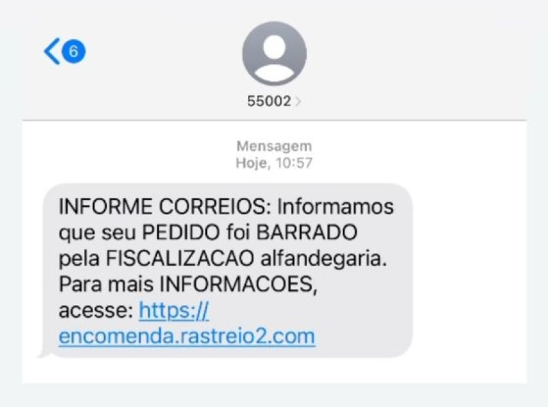
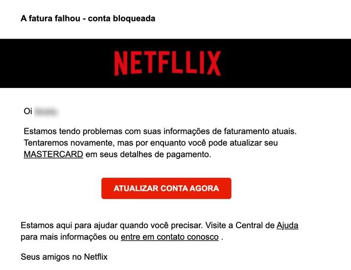

Descubra como identificar mensagens, SMS e sites perigosos
criados para roubar suas senhas e dados pessoais.
Os sites falsos de phishing são cópias perfeitas de páginas de bancos, lojas e órgãos públicos. Eles existem apenas para capturar o que você digita!

Mensagens no celular informando que sua encomenda ficou retida ou que sua conta bancária possui uma pendência, acompanhadas de um link encurtado.

Faturas e boletos falsos enviados por e-mail simulando grandes empresas, induzindo você a baixar um arquivo malicioso ou pagar para contas de laranjas.
Anúncios em redes sociais com ofertas imperdíveis ou falsas vagas de emprego que direcionam para páginas idênticas às de grandes varejistas.
Sempre olhe com atenção para o link antes de digitar seus dados. Golpistas usam letras trocadas ou domínios estranhos (ex: .com.br/suporte).
Recebeu um SMS do seu banco? Não clique no link. Feche a mensagem e abra diretamente o aplicativo oficial do banco no seu celular para conferir.
Se um produto custa muito abaixo do mercado ou se o prêmio exige que você pague um "frete" via PIX para retirar, desconfie imediatamente.
Se você preencheu seus dados ou senhas em uma página suspeita, mude imediatamente as suas senhas de acesso utilizando um dispositivo seguro, avise seu banco caso dados financeiros tenham sido expostos e faça uma varredura antivírus no aparelho.